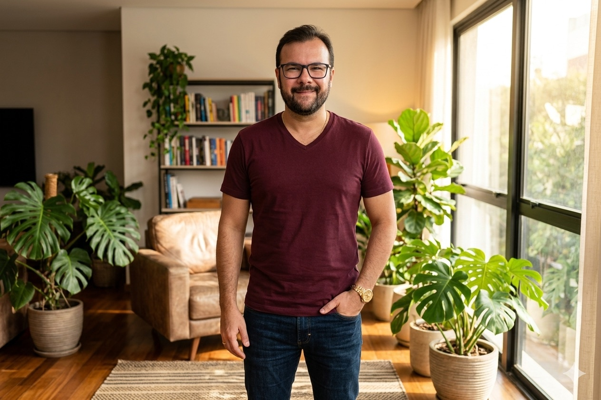

Esta página não fala do que eu entrego. Fala de como eu penso, o que me move, o que me interessa e o que a leitura me ensinou que serve muito além do trabalho.

Passei a vida tentando entender como as coisas se conectam.
Muito antes de qualquer cargo, eu já era o tipo de pessoa que não consegue olhar para um problema sem procurar o sistema por trás dele. O sintoma nunca me bastou. Eu quero a estrutura: o que causa o quê, onde fica a alavanca, o que se move quando toco em um ponto. Esse traço atravessa tudo o que faço, do código que escrevo à forma como decido onde colocar meu tempo e meu dinheiro.
Com os anos, entendi que pensar bem não é acumular respostas. É melhorar as perguntas. Certeza rápida me deixa desconfiado, porque quase sempre é um atalho que a mente toma para parar de pensar. Prefiro segurar a dúvida um pouco mais, olhar de outro ângulo, admitir que posso estar errado. Clareza, para mim, nunca foi dom. É trabalho diário, quase artesanal, de tirar excesso até sobrar o que importa.
No fundo, o que me move é simples de dizer e difícil de fazer: evoluir sem trair quem eu sou. Coerência entre o que penso, o que digo e o que faço. Melhorar um pouco a cada dia, sabendo que aprimorar é tarefa que não termina. Não persigo o holofote. Persigo a sensação de estar no rumo certo, mesmo quando ninguém está olhando.
Por isso estudo todo dia. Não por hobby, nem para colecionar diplomas. Estudo porque cada ideia nova é uma lente a mais para enxergar o mesmo mundo com mais nitidez. O que vem abaixo é um pouco disso: as lentes pelas quais vejo, o que me move quando a escolha é difícil, o que me interessa quando ninguém pede resultado, e o que os livros me deram para a vida.
Seis lentes se alternam o tempo todo. Cada problema pede uma combinação diferente delas, e raramente uma sozinha dá conta.
Vejo o mundo como sistemas que se conectam. Antes de agir sobre a parte, preciso entender o todo: o que depende do quê, onde fica a alavanca, o que quebra se eu mexer em um ponto. Penso em estrutura, não em episódio.
Essa lente me poupa de tratar sintoma como causa. Quando algo dá errado, minha primeira pergunta não é quem falhou, e sim qual desenho tornou a falha provável. Consertar o desenho vale mais do que consertar o caso isolado.
Entender não me basta, eu preciso erguer. Gosto de sair da ideia para a coisa que funciona: o código rodando, o sistema no ar, o agente respondendo. Teoria que não vira artefato me deixa inquieto.
Essa lente me mantém honesto. Quando construo, o mundo me corrige rápido: ou funciona ou não funciona, e nenhuma retórica salva um desenho ruim. Colocar a mão na massa é o que impede a direção de virar fantasia.
Trato quase toda decisão como alocação. Tempo, atenção, capital e energia são recursos finitos, e cada sim tem um custo de oportunidade que raramente aparece na conta. Penso em horizonte longo e em juros compostos, dentro e fora das finanças.
Importo-me mais com a assimetria do que com a previsão. Prefiro exposições onde tenho pouco a perder se der errado e muito a ganhar se der certo. Não preciso acertar o futuro, preciso sobreviver a ele inteiro.
Antes de acelerar, pergunto para onde. Direção errada em alta velocidade só chega mais rápido no lugar errado. Penso primeiro no vetor: o horizonte, o que vai importar daqui a anos, não só a urgência de agora.
Cada tensão pede um instrumento diferente, e escolher o certo é metade do trabalho. Tenho um repertório de modelos para pensar e aplico o que cabe, em vez de forçar sempre o mesmo. Estratégia, para mim, é subtrair opções até sobrar a que sustenta o resto.
Gosto mais da pergunta do que da resposta pronta. Certeza rápida me deixa desconfiado: costuma ser o atalho que a mente toma para parar de pensar. Prefiro sustentar a dúvida um pouco mais e olhar de outro ângulo.
Busco coerência entre o que penso, o que digo e o que faço. Clareza, para mim, nunca foi dom, é trabalho diário de tirar excesso até sobrar o que importa. É a lente que mantém as outras honestas.
Estudo todo dia, não como hobby e não para colecionar certificado. Trato o aprendizado como infraestrutura: sem ele, a prática estaciona e eu começo a repetir o que já sei em vez de melhorar.
Quanto mais aprendo, menor fica a ilha do que domino diante do oceano do que ignoro. Isso poderia assustar, mas em mim faz o contrário: é o que mantém a curiosidade acesa e o ego no lugar.
Seis lentes, um só olhar. A forma de ver decide o que se vê antes de qualquer método.
Estes são os critérios que uso quando ninguém está olhando e a escolha custa. Quatro no centro, os demais em órbita, todos vividos antes de escritos.
Que o que eu penso, digo e faço seja a mesma coisa. É o valor que sustenta os outros, porque sem ele o resto vira discurso. Prefiro uma decisão coerente e solitária a um consenso confuso.
Complexidade é entrada, simplicidade é saída, e o trabalho é a distância entre as duas. Quase tudo que entrego melhora quando corto o que sobra. O difícil não é adicionar, é ter coragem de remover.
Melhorar um pouco a cada dia vence tentar acertar tudo de uma vez. Aprimorar é tarefa que não termina, e essa é a parte boa. Não busco o ponto de chegada, busco a inclinação da curva.
Saber o tamanho do que não sei é o começo de aprender qualquer coisa. Quanto mais estudo, menor fica a ilha do que domino diante do oceano do que ignoro. Isso me deixa curioso, não inseguro.
Curiosidade sem agenda. Não para entregar nada: para entender melhor. Ela se organiza em três territórios.
De mais de 150 livros lidos e catalogados, um a um, reuni os aprendizados mais fortes em quatro temas. Cada leitura deixou um resíduo aplicável, não um resumo. Estão na primeira pessoa porque é assim que eles chegam até mim.
Desconfio da história bem contada. Depois que algo dá errado, sempre surge a explicação que faz o problema parecer óbvio em retrospecto, e essa narrativa arrumada engana duas vezes. Parei de tentar adivinhar qual desastre vem e passei a perguntar se sobrevivo caso venha qualquer um.
De cada hábito ou decisão faço uma pergunta só: isso piora, fica igual ou melhora sob pressão? Prefiro exposições com pouco a perder quando dá errado e muito a ganhar quando dá certo. E remover o que é frágil costuma valer mais do que somar mais um controle.
Defino a saída antes da entrada. Sem alvo e sem limite combinados de antemão, é a emoção que decide por mim no pior momento. Insistir por orgulho é jogar recurso bom atrás de recurso perdido, porque o que já gastei não é motivo para continuar.
Separo o que depende de mim do que não depende, e gasto energia só no primeiro grupo. Entre o estímulo e a resposta existe um espaço, e esse espaço é treinável. Não são os fatos que me perturbam, são as opiniões que formo às pressas sobre eles.
Reputação custa anos para erguer e um deslize para ruir, e o mesmo ato acerta ou fracassa conforme a hora. Saber esperar e saber agir são a mesma competência vista de dois lados. Uso a obra para reconhecer o jogo político à minha volta, não para jogá-lo com cinismo.
Quase nunca estou onde estou. A mente vive no próximo problema enquanto o corpo lava um prato, e a vida vai passando sem ser vivida. Trazer a atenção de volta para a respiração e para a tarefa presente é simples de entender e difícil de sustentar, mas é o que me tira do piloto automático.
Cada sim a algo não essencial é um não a algo essencial, e não existe sim de graça. Se uma opção não é um sim claro, virou um não claro. Concentrar não é fazer mais rápido, é fazer menos coisas e ir mais fundo.
Olho primeiro o desequilíbrio que já existe. Poucos projetos concentram quase todo o valor, poucos hábitos respondem por quase toda a satisfação. Trabalhar mais deixou de ser minha resposta padrão; trabalhar nos pontos certos tomou o lugar.
Troquei a pergunta "por que isso é tão difícil?" por "e se pudesse ser fácil?". Pessoas competentes complicam por reflexo, e eu sou uma delas. Exaustão não é prova de dedicação, costuma ser sinal de um processo mal desenhado.
Uso o que me incomoda nos outros como espelho. O que nego em mim tende a aparecer projetado para fora, e reconhecer isso é mais honesto do que seguir apontando o dedo. Amadurecer, nessa leitura, não é ficar perfeito, é ficar inteiro.
Leio em camadas em vez de buscar um significado único. O mesmo objeto pode significar uma coisa e o seu contrário, e essa ambiguidade é o terreno de qualquer decisão real. Símbolos parecidos reaparecem em culturas sem contato, o que me deu uma noção concreta do que nos une por baixo das diferenças.
Trato minhas certezas como modelos, não como a realidade. Uma teoria nunca se prova em definitivo, só se refuta, e basta um caso contrário para derrubá-la. Marco meu grau de confiança e me disponho a abandonar a hipótese diante de evidência nova, em vez de defendê-la por apego.